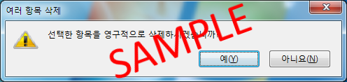

대화창은 컴퓨터가 사용자에게 중요한 정보를 전달하거나 어떤 작업을 수행 하기 전에 진행 여부를 묻는 작은 메시지창입니다. 아래의 예제 그림과 같습니다.
대화창이 나타나면 반드시 창의 내용이나 질문을 읽고 버튼을 통해서 적절하게 반응해야 합니다.
아래의 링크를 클릭하면 대화창이 나오는데 내용을 읽고 적절한 버튼을 누르면 다음으로 진행할 수 있습니다.
대화창 열기

본 사이트는 채경자 강사(maielckj@네이버)의 수강생을 위한 지원 시스템입니다.